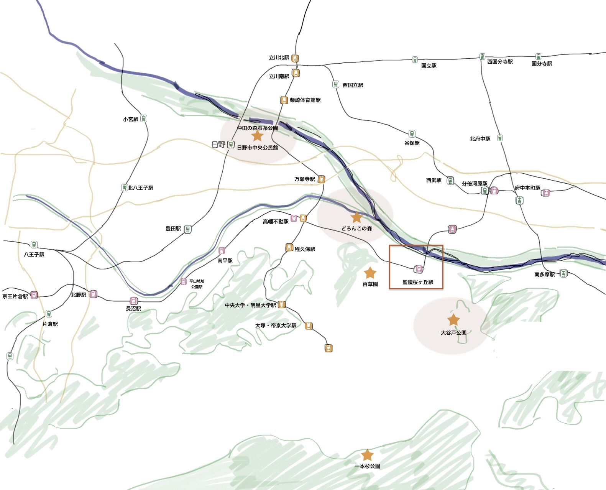
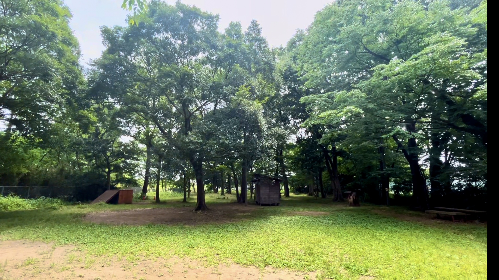
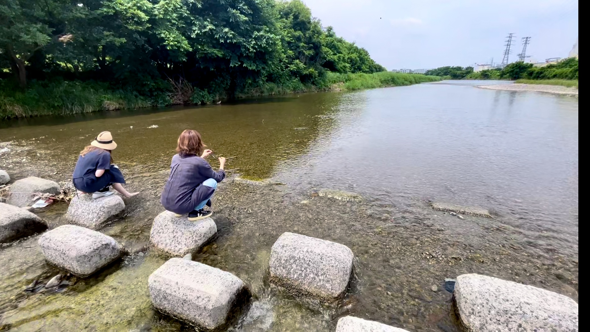
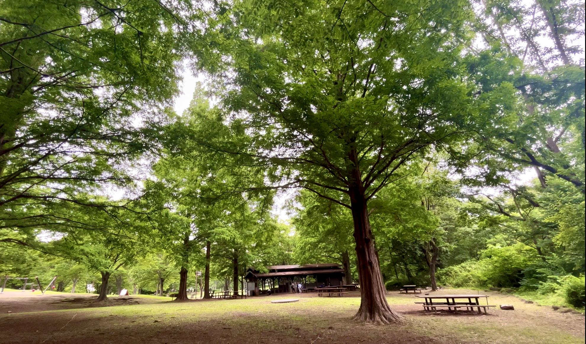

×

プレイパークどろんこの森
住所
東京都日野市落川1400
コンセプト
子どもたちが「自分の責任で自由に遊ぶ」場所。やってみたいことに挑戦でき、小さなけがや失敗を繰り返しながら成長できる自然の中の遊び場です。
特徴
プレーリーダーが子どもたちと一緒に遊び、遊びのヒントを提供。焚き火の周りで人が集まり、食べ物を焼いたりするコミュニティ空間。いろいろな価値観の人が自分らしくいられる場所を目指しています。
詳細情報
×

浅川
場所
多摩川支流・日野市南地域を横切る河川
源流と歴史
八王子市の西方、「夕焼け小焼け」の歌のモデルとなった恩方から流れ出す多摩川の支流。石田村（土方歳三生誕地）の地名由来や、油免地区での菜種油栽培など、地域の歴史と深く結びついています。
現在の姿
かつてのドブ川から清流に復活。魚たちが泳ぐ澄んだ水となり、市民の憩いの場に。浅川・程久保川湾土では人工的に蘇らせた水辺の自然で、多様な生態系と子どもたちの遊び場が形成されています。
詳細情報
×

大谷戸公園
住所
東京都多摩市連光寺5丁目17-1
特徴
都市近郊でキャンプができる貴重な公園。大きな木々に囲まれた自然豊かな環境で、本格的なアウトドア体験が楽しめます。最近リニューアルされ、より充実した施設となっています。
アクティビティ
テント宿泊 - 一泊キャンプが可能
薪火調理 - 焚き火での本格的な野外料理
自然体験 - 豊かな緑に囲まれた癒しの空間
ピクニック - 東屋やベンチでの日帰り利用
薪火調理 - 焚き火での本格的な野外料理
自然体験 - 豊かな緑に囲まれた癒しの空間
ピクニック - 東屋やベンチでの日帰り利用
詳細情報